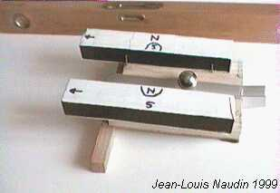
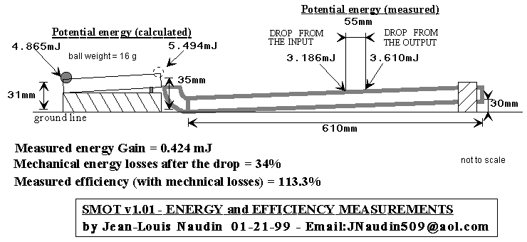
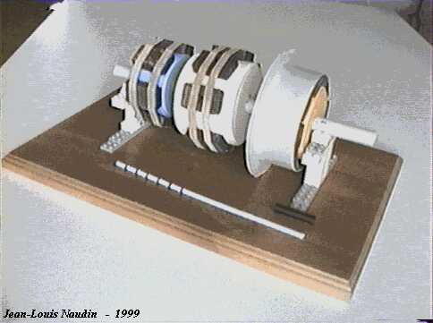

Pour visualiser les vidéos, vous devrez avoir préalablement installé l'application gratuite
Vous pouvez télécharger gratuitement la version RealPlayer 8 Basic à : http://proforma.real.com/real/player/blackjack.html
De
l'atelier au Labo...
Expériences
et Constructions
par
Jean-Louis Naudin
Créé
le 4 Juillet 1999 - JLN Labs - Mise à jour le 23 Avril 2005
Toutes les informations et schémas sont publiés
gratuitement ( freeware ) et sont destinés à un usage personnel
et non commercial
All informations and
diagrams are published freely (freeware) and are intended for a private use and a non commercial
use.
 All
these videos are in French - Toutes ces vidéos sont en Français
All
these videos are in French - Toutes ces vidéos sont en Français
Pour visualiser les vidéos, vous
devrez avoir préalablement installé l'application gratuite

Vous pouvez télécharger gratuitement la version RealPlayer
8 Basic à : http://proforma.real.com/real/player/blackjack.html
Série 1 : Utilisation de l’énergie des aimants, les premiers pas vers l'Energie Libre


SMOT Energy measurements
video
( 30 FPS / DivX codec is required
)

Click
on the picture to download the file ( 14.3 Mb )

 Email : JNaudin509@aol.com
Email : JNaudin509@aol.com